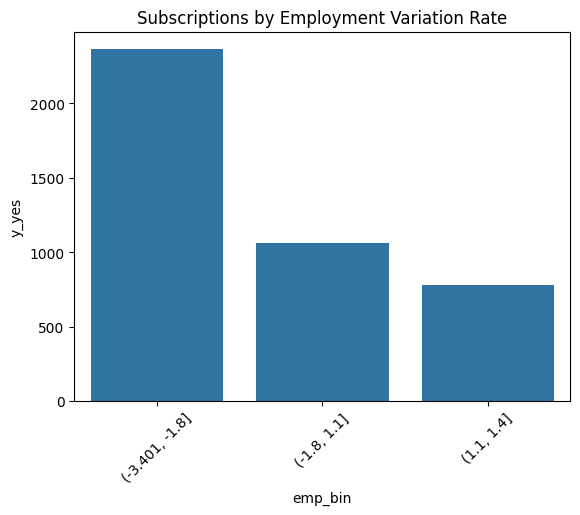
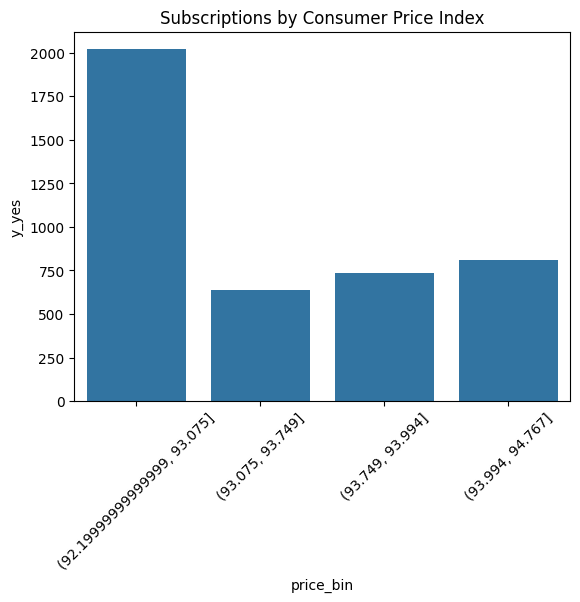
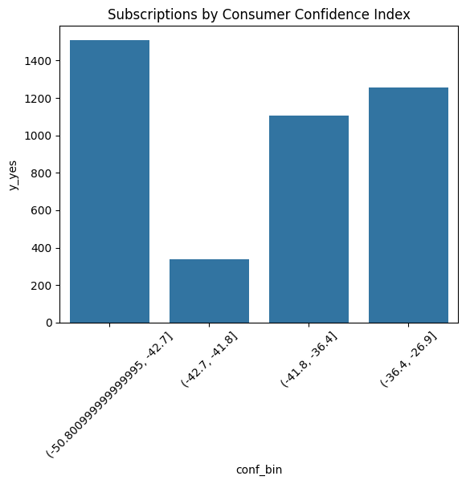
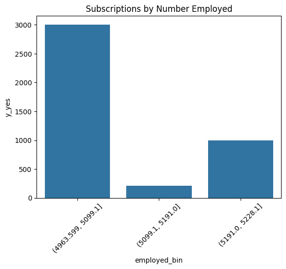

The core task we’re interested in is identifying those customers most likely to subscribe to a term deposit.
A term deposit is a fixed-term investment that includes the deposit of money into an account at a financial institution. In this case, our financial institution.
I don’t know a lot about data science, but I’ve been trying to get up to speed. Do you think a supervised or unsupervised approach would work best for this situation?
Supervised with a tree model. We want to predict the y column (whether someone will make a term deposit) based on the other categorical data.
Miguel, that is a great question.
While we are asking detailed questions, the dataset has approximately 37,000 records. How much of that data will you use to train your model?
Based on your initial analysis of the data, your team feels:
A simple 80/20 split will provide us with enough to accurately train and test our model. A 50/50 split so that we have the same amount of training data as testing. We will pull out 1,000 records for our test dataset and use the other 36,000 for training. This gives our model more to train on and will produce better results. We will use all 37,000 for training and use cross-validation to evaluate the model.
80/20 split for training and testing
Aside from the core marketing question Miguel mentioned, I’m wondering if there are other insights we could gain from our data.
I can look at the data and tell that some days of the week or some months produce better results than others.
I’m wondering if it’s possible for us to see if those results are true for all customers, or if some types of customers respond better on certain days than others?
Since we’re operating in the European Union, we’re subject to GDPR compliance requirements.
What do you think we might need to do for this project in order to be compliant with GDPR regulations?
Beatriz, Senior Data Scientist asks: Since we’re operating in the European Union, we’re subject to GDPR compliance requirements.
What do you think we might need to do for this project in order to be compliant with GDPR regulations?
Based on your initial analysis of the data, your team feels:
This is historic data, so we should be just fine. This is anonymous data, so we should be just fine. The GDPR doesn’t apply in this situation, since we’re just building a model, not selling data. In order to use this data under GDPR, we’ll need to get consent from the customers in the dataset.
GDPR does not apply because our data is anonymous.
Who is more likely to make a term deposit?
Other questions to answer
Which people should be called on which day/month? Robert and Shaun
Does frequent contact poorly affect marketing campaigns? Dylan
Make different models for different economic contexts. Jaeli and Peter
import pandas as pdcampaign = pd.read_csv('https://raw.githubusercontent.com/byui-cse/cse450-course/master/data/bank.csv')campaign.head()campaign.info()campaign.describe()
/usr/local/lib/python3.12/dist-packages/sklearn/metrics/_classification.py:1565: UndefinedMetricWarning: Precision is ill-defined and being set to 0.0 in labels with no predicted samples. Use `zero_division` parameter to control this behavior.
_warn_prf(average, modifier, f"{metric.capitalize()} is", len(result))
/usr/local/lib/python3.12/dist-packages/sklearn/metrics/_classification.py:1565: UndefinedMetricWarning: Precision is ill-defined and being set to 0.0 in labels with no predicted samples. Use `zero_division` parameter to control this behavior.
_warn_prf(average, modifier, f"{metric.capitalize()} is", len(result))
/usr/local/lib/python3.12/dist-packages/sklearn/metrics/_classification.py:1565: UndefinedMetricWarning: Precision is ill-defined and being set to 0.0 in labels with no predicted samples. Use `zero_division` parameter to control this behavior.
_warn_prf(average, modifier, f"{metric.capitalize()} is", len(result))
/usr/local/lib/python3.12/dist-packages/sklearn/metrics/_classification.py:1565: UndefinedMetricWarning: Precision is ill-defined and being set to 0.0 in labels with no predicted samples. Use `zero_division` parameter to control this behavior.
_warn_prf(average, modifier, f"{metric.capitalize()} is", len(result))
/usr/local/lib/python3.12/dist-packages/sklearn/metrics/_classification.py:1565: UndefinedMetricWarning: Precision is ill-defined and being set to 0.0 in labels with no predicted samples. Use `zero_division` parameter to control this behavior.
_warn_prf(average, modifier, f"{metric.capitalize()} is", len(result))
/usr/local/lib/python3.12/dist-packages/sklearn/metrics/_classification.py:1565: UndefinedMetricWarning: Precision is ill-defined and being set to 0.0 in labels with no predicted samples. Use `zero_division` parameter to control this behavior.
_warn_prf(average, modifier, f"{metric.capitalize()} is", len(result))
/usr/local/lib/python3.12/dist-packages/sklearn/metrics/_classification.py:1565: UndefinedMetricWarning: Precision is ill-defined and being set to 0.0 in labels with no predicted samples. Use `zero_division` parameter to control this behavior.
_warn_prf(average, modifier, f"{metric.capitalize()} is", len(result))
/usr/local/lib/python3.12/dist-packages/sklearn/metrics/_classification.py:1565: UndefinedMetricWarning: Precision is ill-defined and being set to 0.0 in labels with no predicted samples. Use `zero_division` parameter to control this behavior.
_warn_prf(average, modifier, f"{metric.capitalize()} is", len(result))
/usr/local/lib/python3.12/dist-packages/sklearn/metrics/_classification.py:1565: UndefinedMetricWarning: Precision is ill-defined and being set to 0.0 in labels with no predicted samples. Use `zero_division` parameter to control this behavior.
_warn_prf(average, modifier, f"{metric.capitalize()} is", len(result))
import pandas as pdimport seaborn as snsimport matplotlib.pyplot as pltcampaign = pd.read_csv('https://raw.githubusercontent.com/byui-cse/cse450-course/master/data/bank.csv')
Model 1: Employment Variation Rate (emp.var.rate)
Question: How does subscription success vary by employment conditions?
/tmp/ipython-input-3855154566.py:9: FutureWarning: The default of observed=False is deprecated and will be changed to True in a future version of pandas. Pass observed=False to retain current behavior or observed=True to adopt the future default and silence this warning.
.groupby('emp_bin')

Model 2: Consumer Price Index (cons.price.idx)
Question: Do higher prices affect campaign success?
/tmp/ipython-input-3001552865.py:9: FutureWarning: The default of observed=False is deprecated and will be changed to True in a future version of pandas. Pass observed=False to retain current behavior or observed=True to adopt the future default and silence this warning.
.groupby('price_bin')

Model 3: Consumer Confidence Index (cons.conf.idx)
Question: Does consumer confidence correlate with success?
/tmp/ipython-input-2892907372.py:9: FutureWarning: The default of observed=False is deprecated and will be changed to True in a future version of pandas. Pass observed=False to retain current behavior or observed=True to adopt the future default and silence this warning.
.groupby('conf_bin')

Model 4: Euribor 3-Month Rate (euribor3m)
Question: How do interest rates impact subscriptions?
/tmp/ipython-input-4186568377.py:9: FutureWarning: The default of observed=False is deprecated and will be changed to True in a future version of pandas. Pass observed=False to retain current behavior or observed=True to adopt the future default and silence this warning.
.groupby('euribor_bin')
/tmp/ipython-input-3004665151.py:9: FutureWarning: The default of observed=False is deprecated and will be changed to True in a future version of pandas. Pass observed=False to retain current behavior or observed=True to adopt the future default and silence this warning.
.groupby('employed_bin')

Employment Variation Rate → Line Plot (Trend)
Why: emp.var.rate is time-based and ordered. A line plot highlights trends.